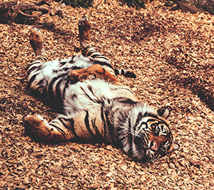

Tigre-de-bengala
da família Panthera tigris tigrisEm tempos, havia oito subespécies de tigres, mas três delas acabaram por se extinguir no decorrer do século XX. Nos últimos 100 anos, a caça e a devastação florestal reduziram as populações de tigre, que passaram de centenas de milhares de animais para, talvez, menos de 2500.

Os tigres vivem isolados e deixam marcas olfativas em grandes territórios para manterem os rivais afastados.
Os tigres usam as pelagens caraterísticas como camuflagem (não há dois que tenham exatamente as mesmas listas).
Eles esperam e aproximam-se o suficiente para atacar as suas vítimas com um salto rápido e um ataque fatal. Um tigre com fome pode comer até cerca de 27 quilogramas numa noite, apesar de normalmente comerem menos.
"Apesar de terem uma reputação temível, a maioria dos tigres evita os humanos; no entanto, alguns tornam-se perigosos e atacam humanos. Normalmente, estes animais estão doentes ou estão incapacitados de caçar normalmente. Podem, ainda, habitar numa área onde desapareceram as suas presas tradicionais."
- Nome comum: Tigre-de-bengala
- Nome científico: Panthera tigris tigris
- Classe: mamíferos
- Dieta: carnívora
- Esperança média de vida
no habitat natural: de 8 a 10 anos - Tamanho: cabeça e corpo
entre 1,50 e 1,80 metros;
cauda entre 0,60 e 0,90 metros - Peso: de 108 a 227 quilogramas
As fêmeas dão à luz ninhadas de duas a seis crias, que criam com pouca ou mesmo nenhuma ajuda do macho. As crias não conseguem caçar até terem 18 meses de idade e ficam junto das mães durante dois a três anos, altura em que se afastam para encontrar o seu próprio território.
É uma espécie naturalmente solitária, embora sua convivência forçada com outros tigres em parques de áreas restritas da Índia esteja provocando uma aproximação maior entre os indivíduos nos últimos anos